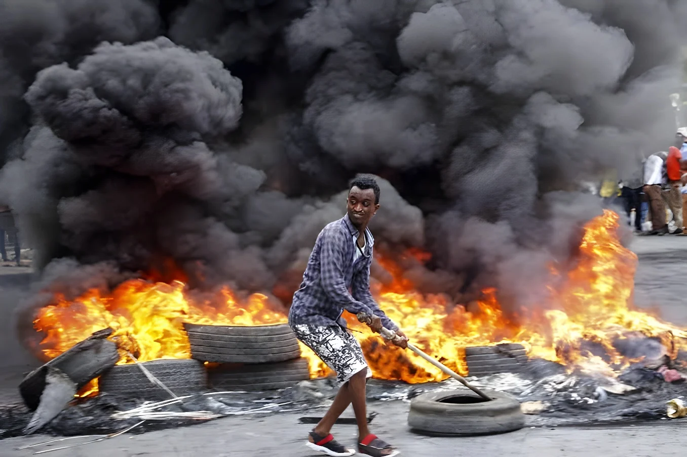

Le 28 septembre 2026, à l'aube, des milliers de combattants fidèles à Abdiaziz Hassan Mohamed « Laftagareen », ancien président de l'État fédéré du Sud-Ouest, ont attaqué Baidoa, la grande ville du sud-ouest de la Somalie tenue depuis mars par l'armée fédérale. Chasseurs, drones et combats de rue : l'armée affirme avoir repoussé l'assaut et tué plus de 70 assaillants, tandis que Médecins sans frontières (MSF) a recensé au moins 3 morts et 69 patients à l'hôpital régional. C'est la troisième offensive en six semaines : derrière les armes, une querelle sur le mode de scrutin et le pouvoir de Mogadiscio sur ses États, en pleine crise de légitimité du président Hassan Sheikh Mohamud, dans un pays où les shebabs restent à l'affût.
Les combats ont éclaté tôt le lundi 28 septembre 2026. Selon les autorités locales citées par l'AFP, entre 2 000 et 3 000 hommes ont pris part à l'attaque, menée avec des véhicules chargés d'explosifs et des drones. D'après la presse somalienne, les partisans de Laftagareen, qui se font appeler les « Darawish », ont visé la 60e division de l'armée nationale à l'intérieur de Baidoa ; une explosion a retenti près d'un site réputé abriter des armes et du matériel, et les combats se sont étendus à au moins sept quartiers. L'armée a répliqué avec des avions de chasse et des drones. Un haut officier a affirmé que les troupes avaient « infligé de lourdes pertes » aux assaillants et les avaient chassés de la ville.
Le bilan reste incertain. Le gouvernement parle de plus de 70 assaillants tués, sans preuve indépendante. Du côté des civils, MSF a indiqué que l'hôpital régional de Bay avait reçu 69 patients, dont 5 enfants, et enregistré 3 décès, parmi lesquels un agent de santé. Une structure de santé a été gravement endommagée, une ambulance pillée, et les routes menant aux hôpitaux étaient bloquées, empêchant de nombreux blessés d'être soignés.
L'origine du conflit est politique avant d'être militaire. Depuis 2024, le président Hassan Sheikh Mohamud a fait adopter des révisions constitutionnelles (suffrage universel direct, mandats portés de quatre à cinq ans, nomination du Premier ministre par le chef de l'État) que le Puntland a rejetées dès mars 2024 en rompant avec Mogadiscio. Le Jubaland, en conflit ouvert avec le pouvoir central depuis fin 2024, puis le Sud-Ouest, le 17 mars 2026, ont suivi cette voie : accusant le pouvoir central d'armer des milices pour renverser son président.
Onze jours plus tard, le 28 mars, Laftagareen s'est fait réélire par le Parlement régional en quelques heures, par 66 voix sur 95, au mépris, selon Mogadiscio, d'un accord antérieur sur l'élection « une personne, une voix ». L'armée fédérale est entrée dans Baidoa le 30 mars et Laftagareen a quitté le pouvoir. Il affirme depuis, en exil, rester le président légitime et vouloir « libérer » un État qu'il dit sous occupation.
Troisième offensive en six semaines : avions, drones, 69 patients à l'hôpital, 3 morts selon MSF.
Le Conseil de paix du Sud-Ouest fait du cessez-le-feu sa priorité ; le camp Laftagareen dément tout accord.
Deuxième attaque : des combats éclatent dans plusieurs quartiers, 71 blessés sont soignés à l'hôpital selon MSF.
Un mémorandum de l'Union africaine autorise l'AUSSOM à appuyer l'armée contre les shebabs et leurs alliés, tout en lui imposant de rester neutre politiquement.
Première grande attaque sur Baidoa. L'armée revendique environ 30 assaillants tués ; MSF reçoit 94 blessés.
Sheikh Aden Madobe, jusque-là président de la Chambre du peuple, est élu président du Sud-Ouest par 88 voix sur 90 puis prend ses fonctions, avec le soutien de Mogadiscio.
Laftagareen est réélu en une journée par le Parlement régional. L'armée fédérale entre dans Baidoa le 30 et il quitte le pouvoir.
L'État du Sud-Ouest suspend toute coopération avec le gouvernement fédéral, après le Puntland et le Jubaland.
Le gouvernement fédéral présente les assaillants comme un mélange de miliciens de Laftagareen et de shebabs, le groupe jihadiste lié à Al-Qaïda qui contrôle une grande partie des campagnes autour de Baidoa. Il avance l'usage de véhicules piégés, méthode associée aux shebabs, et le fait que les partisans de l'ancien président se sont rassemblés dans des zones tenues par les jihadistes. Mais aucune preuve indépendante n'a été publiée, et des analystes décrivaient jusqu'ici deux menaces distinctes encerclant la ville. Le porte-parole de Laftagareen rejette toute alliance avec les shebabs.
L'autre polémique est turque. Le bureau de Laftagareen accuse la Turquie, grand partenaire sécuritaire de Mogadiscio, d'avoir tiré six missiles depuis des chasseurs F-16 sur la ville. Ni Ankara ni le gouvernement somalien n'ont confirmé ces accusations, qui restent invérifiables. Quant à l'AUSSOM, la mission de l'Union africaine qui a succédé à l'ATMIS, elle est prise dans une contradiction : autorisée à combattre les shebabs, elle doit « éviter tout conflit politique ».
« Les combats de Baidoa opposent strictement nos forces à ceux qui nous ont envahis en prétendant représenter le gouvernement fédéral, ainsi que la Turquie. »
— Porte-parole de Laftagareen, cité par l'AFP, 28 septembre 2026 (traduction)« Il est inacceptable que les civils et les soins de santé soient pris dans la violence. »
— Dr Elshafie Mohammed, représentant de MSF en Somalie, septembre 2026 (traduction)| Acteur | Position |
|---|---|
| Gouvernement fédéral | Parle d'une attaque de shebabs et de miliciens, revendique 70 assaillants tués |
| Aden Madobe | Président du Sud-Ouest depuis juin, soutenu par Mogadiscio |
| Laftagareen | Se dit président légitime, nie tout lien avec les shebabs, dénonce des frappes turques |
| Conseil de paix du Sud-Ouest | Réclame un cessez-le-feu et un dialogue ; sans résultat |
| AUSSOM | Appui anti-shebabs, neutralité politique exigée |
La population de Baidoa paie le prix fort. Selon MSF, la moitié des jeunes enfants des sites de déplacés étaient en malnutrition aiguë lors d'une enquête de juillet, dont un sur quatre sous forme sévère. L'ONU compte 26 000 habitants de Baidoa en insécurité alimentaire catastrophique, alors que le Programme alimentaire mondial n'atteint plus que 670 000 personnes par mois, contre plus de 4 millions il y a quelques années, faute de fonds. Le phénomène El Niño menace d'aggraver la situation.
Sur le plan national, le mandat présidentiel de Hassan Sheikh Mohamud a expiré le 15 mai 2026, celui du Parlement le 14 avril, sans calendrier électoral convenu. L'opposition du Conseil somalien pour l'avenir conteste sa légitimité. La Somalie vit ainsi une crise qui rappelle d'autres guerres africaines, comme celle du Soudan, où la fragmentation du pouvoir nourrit la violence.
L'affrontement de Baidoa illustre un dilemme classique des États fragiles : comment bâtir un État central sans écraser les entités régionales qui le composent ? La Somalie a adopté un fédéralisme en 2012, pour surmonter l'effondrement de l'État de 1991. Or le pouvoir central cherche aujourd'hui à imposer le suffrage universel direct et à prolonger les mandats, au risque de voir les États fédérés refuser sa légitimité, voire prendre les armes.
Pour la dissertation, le cas est riche : le conflit mêle élection et légitimité, rapports entre centre et périphéries, internationalisation d'une guerre civile (Turquie, Union africaine) et lien entre insécurité et famine. Mais il faut rester prudent : la plupart des bilans et des accusations (shebabs, frappes turques) ne sont pas encore vérifiés de manière indépendante.